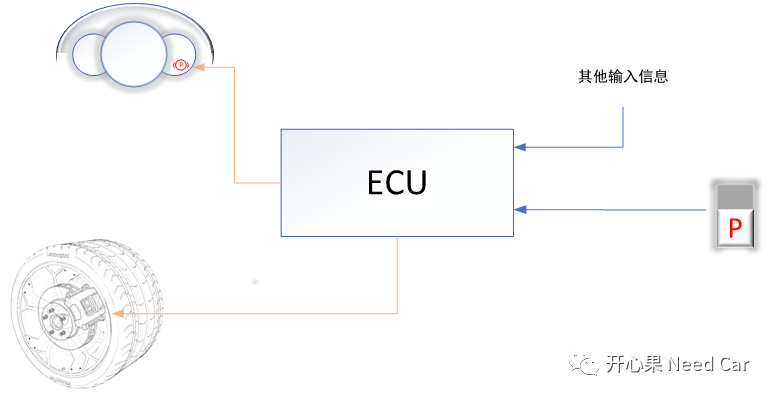

电子驻车制动（Electrical Park Brak，EPB），开车的朋友很多都使用过。术语太过于专业，如果说手刹或者P挡，是不是就更明白点了，EPB就是我们平时等红绿等时按的那个P按钮（自动挡车几乎都配有）。之所以聊这个话题，是因为前段时间碰到了EPB故障乱报的问题，本文聊的主要目的是让大家清楚EPB是个啥就好了，因为不是每个项目都做EPB功能（项目对应的ECU不同）。
为了便于理解，简化一下EPB的制动过程，如下图所示。我们假设一个场景：遇到某个红路灯，可能需要等待1min，此时驾驶员按下电子驻车按键P（此时即使在D挡，车辆也不动），信号上报给对应控制器ECU（一般会报给VCU），ECU收到该信号后，一方面会控制车轮上的卡钳卡住，此时车子就动不了了；另一方面将驻车信息传给仪表，仪表盘上显示一个红色的P（停车挂P挡也会警示），警示驾驶员，车辆被制动了。红灯快结束时（比如剩余3s），驾驶员扣动驻车按键P，ECU控制车轮上的卡钳松开，同时通知仪表取消驻车制动警示，踩加速踏板，车子行驶（车子一直在D挡）。
实际开发中，EPB的使用会上报一个DTC，并不是说这是一个“故障”，从保护人员人身安全的角度考虑，要将其划分到DTC中。
这个DTC有什么特别的呢？我们一般在ECU下电时存储DTC信息，而这个EPB对应的DTC信息需要立即存储。为什么要立即存储呢？假设这样一种场景：我们的车子需要维修，维修人员维修前，需要将车子制动，此时EPB对应的这个DTC没有立即存储，而是等下电时存储，如果下电时异常掉电，车子再次启动时，驻车制动失效，这就会威胁到维修人员的人身安全。相比下电时存储，立即存储会提高DTC信息存储成功率，这次没有存储成功，下个周期还会再次上报，而下电时异常掉电就没有再次存储的机会了。EPB属于复杂驱动的范畴，也就是说按照Autosar架构开发的话，需要配置一个复杂驱动的接口，通过RTE将信息给到算法层。